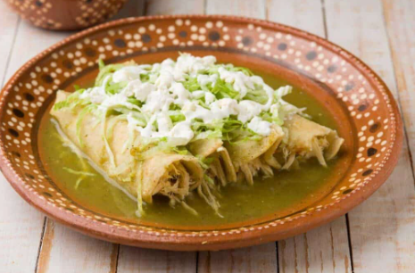

Ingredientes
- 500 g De tomate verde
- 2 o 3 Chiles serranos al gusto
- 1 Diente de ajo
- ¼ De cebolla
- ½ Taza de cilantro fresco
- Sal al gusto
- ½ Taza de caldo de pollo
- Tortillas de maíz
- 2 Tazas de pollo cocido y deshebrado
- Crema
- Queso rallado
- Cebolla en rodajas finas
- Aguacate en rebanadas
Preparación
- Hierve los tomates, los chiles en agua durante 10 a 12 minutos o hasta que estén suaves.
- Escurre y licúa con el cilantro, el ajo, la cebolla y sal al gusto. Coloca un poco de caldo de pollo para una salsa más líquida.
- En una sartén, calienta un poco de aceite y vierte la salsa. Cocina a fuego medio durante unos 5 a 10 minutos hasta que espese un poco y cambie de color. Prueba y ajusta de sal.
- Calienta un poco de aceite en otro sartén y pasa rápidamente cada tortilla por el aceite caliente (unos segundos por lado). Para que no se rompan al enrrollarlas.
- Rellena cada tortilla con pollo deshebrado o, enróllala y colócala en un plato.
- Vierte la salsa caliente sobre las enchiladas.
- Finalmente, agrega crema, queso fresco, cebolla y aguacate al gusto.